Experiment 102: SIMP1, which parts of the BG2 best guess can be removed before production
Take-home message: the three recent-power inputs are the one part of BG2's XGBoost models that
cannot be removed at Primary substations and supply points, but the pre-registered cost of removing
them was inflated by one substation's uncut commissioning months. A Primary substation steps 33 kV
or 66 kV down to 11 kV, and a supply point is a bulk supply point (BSP) or grid supply point (GSP),
where the transmission network feeds the distribution network. BG2 is the best-guess forecast of
experiment 87. The score is the quantile score in points of capacity, where one point is 1% of a
series' capacity and lower is better. The simplest Primary forecast (a single weekly-refitted XGBoost
model without the power inputs, the solar offset, the 14-day correction, or the blend) scores 6.066
against BG2's 5.260. That pre-registered contrast, C1, is +0.806 points (99% interval 0.367 to 1.569),
about 15% of BG2's score. C1 removes four parts at once. Removing the power inputs alone costs 0.710
points (95% interval 0.360 to 1.233). The lag result is driven by two of the 16 Primaries: Primary M
(whose first months are uncut, a defect) and Primary K (whose demand level fell in March 2026). With
Primary M's commissioning months cut, the lags alone cost 0.361 points (0.198 to 0.546) and the
simplest candidate loses 0.448 (0.261 to 0.652) against BG2, still above the 0.15 limit. The verdict
is partly supported: 2 of the 5 pre-registered contrasts hold.
We asked which parts of BG2 earn their place in production. We removed each part in turn from the best guess (the blend of five models, the three recent-power inputs, the solar offset, the 14-day correction, the spread factor of 1.15), scored each result against BG2 on the same 292 daily forecast runs, and also scored the solar offset on midday summer rows. The blend, offset, correction, and spread factor each cost 0.1 points or less when removed, and a blend of weekly, analogue, and frozen models matches BG2's five models. At the wind farms the lags make no measurable difference (-0.059 points); at the solar farms the change is within noise (+0.010), but the interval misses the 0.10 limit by 0.010.
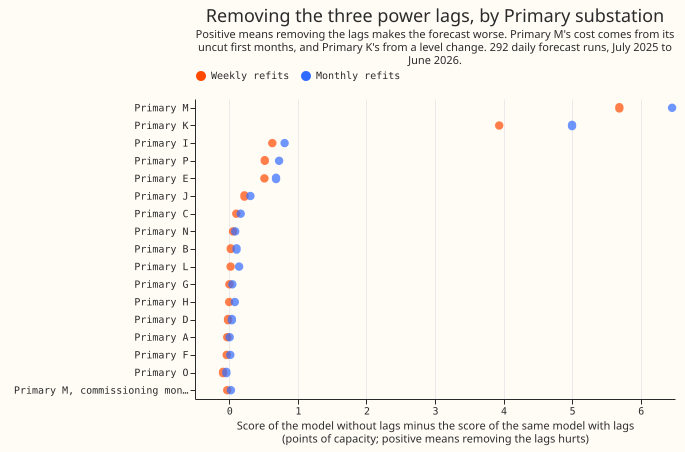
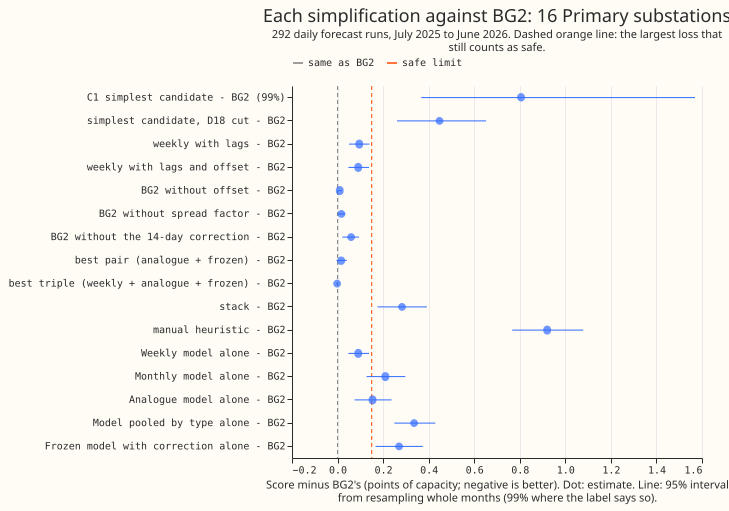
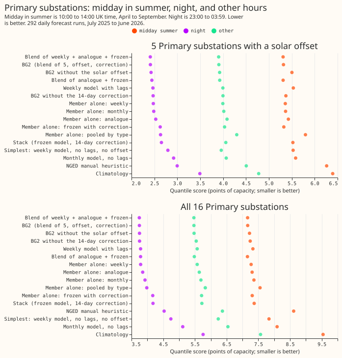
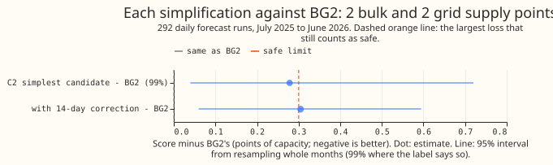
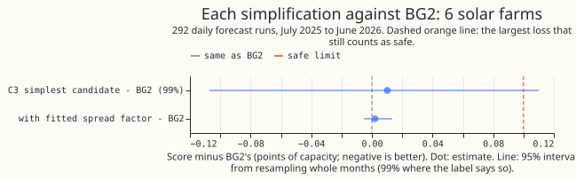
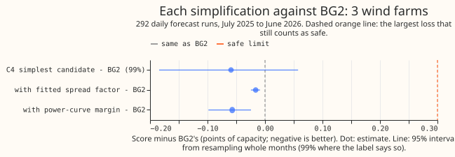
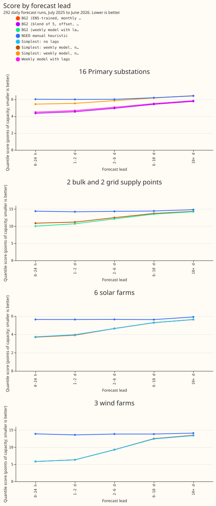
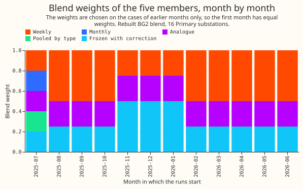
Example forecasts. Each figure shows BG2, the simplifications, and manual_heuristic for one
series, in the week with the highest mean power in summer (which at a series with embedded solar
panels need not be a sunny week), the week with the highest mean power in winter, and the week with
the largest error. Each day shows the 15 to 39 hour lead window of the run that started that morning.
The series are Primary G, Supply point A, Solar farm A, and Wind farm A.
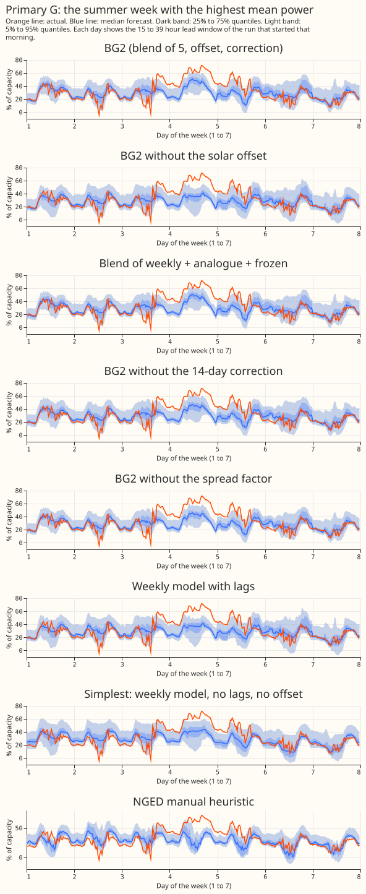
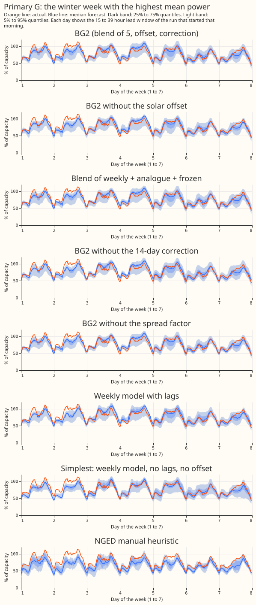
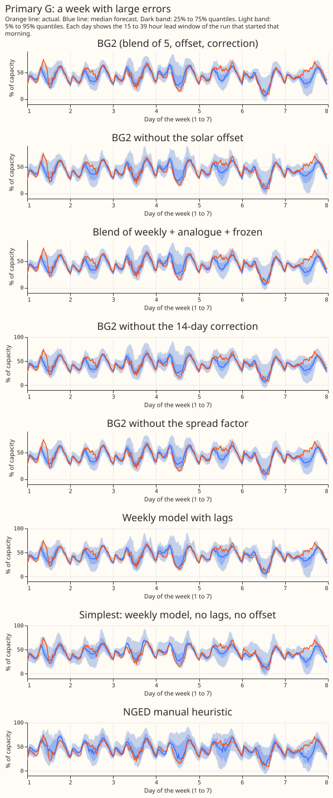
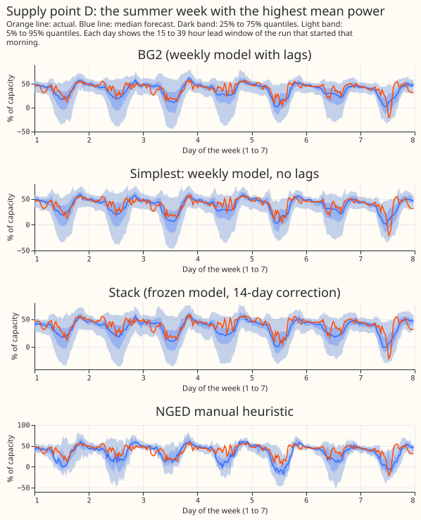
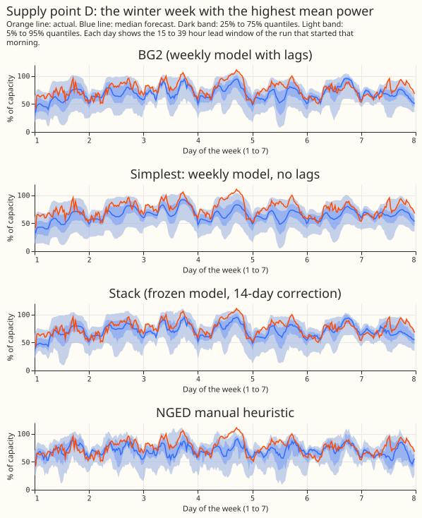
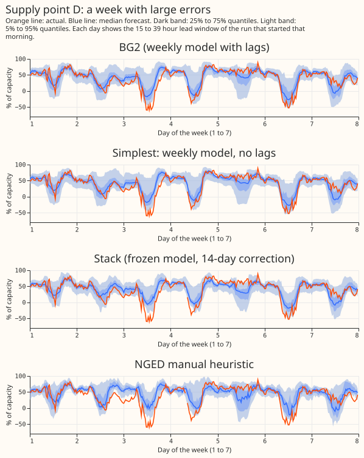
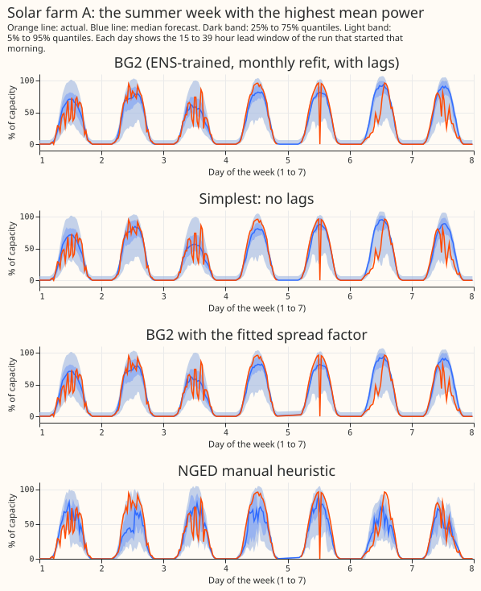
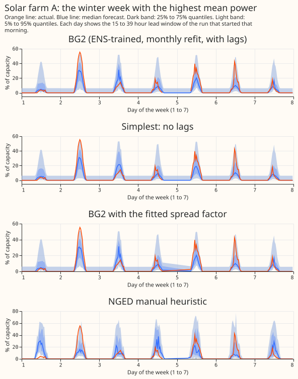
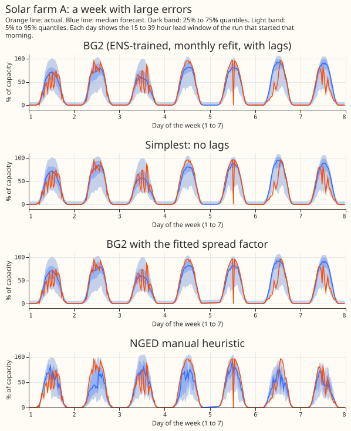
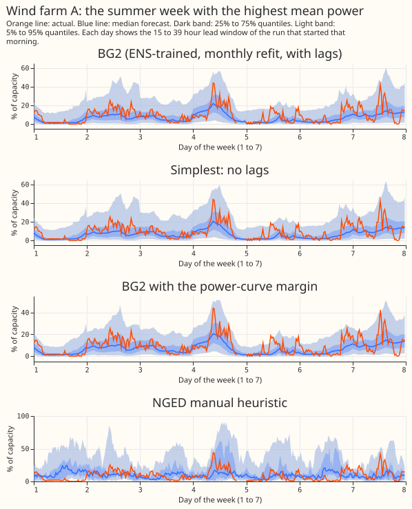
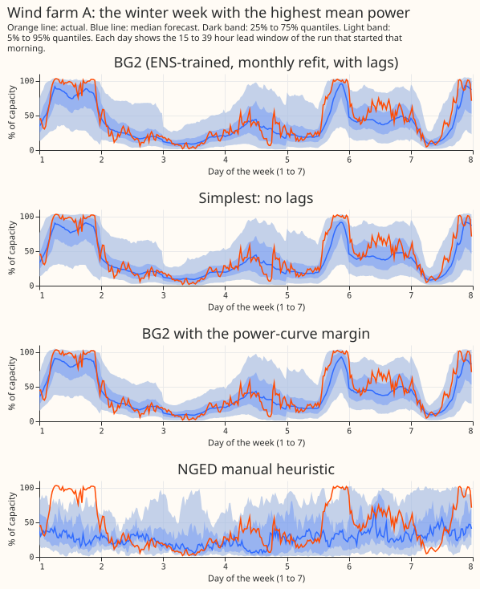
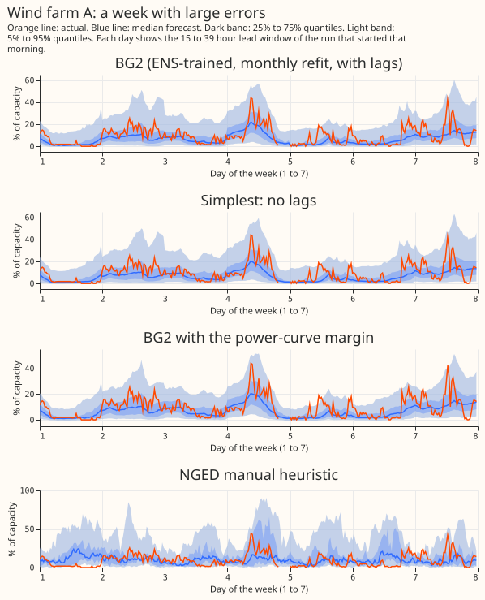
The five blend members. Each figure shows the median forecast of the weekly, monthly, analogue,
pooled-by-type, and frozen-with-correction members, with the blend and the actual, at one Primary
substation. The same three weeks are drawn for Primary G and Primary K in this folder
(figure_5_members_g_* and figure_5_members_k_*).
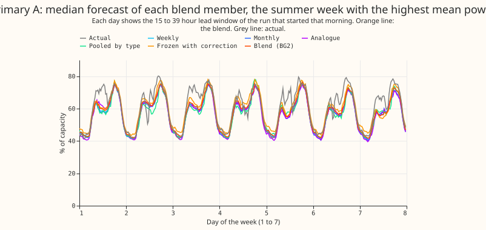
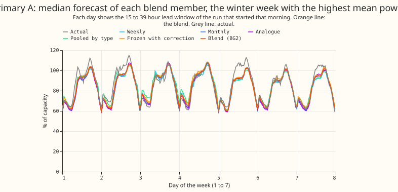
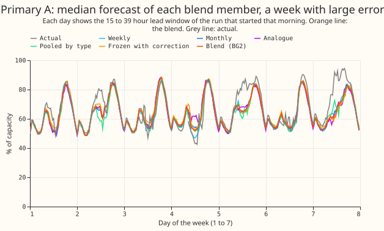
Results
- Architecture and arms. Every arm is BG2 (experiment 87) with one part removed. The removal arms are the five blend members alone, every blend of two or three members, BG2 with the frozen member uncorrected, BG2 without the offset, BG2 without the spread factor (the last two stored in experiment 87), and the single XGBoost model without the three power inputs. The weekly model without lags is the Primary and supply point simplest candidate; the monthly model without lags is the farm candidate and the monthly contrast at Primaries. Every no-lag model is BG2's model with the three lag columns removed (same rows, weights, 500 rounds, seed 0). A lag-free model with a level term, or with fewer rounds, was not tested.
- Row set and schedule. The 292 runs of
fold_a_daily_gap_v1. Primary and supply point contrasts C1 and C2 use weekly refits, as BG2 does. The farm contrasts and the monthly lag contrast use monthly refits, as BG2's farm arms do. The lag cost has the same sign and a similar size under both schedules (0.903 points monthly and 0.710 weekly, at Primaries). GPU use was 14.2 hours of wall time, including the D18 refits. - The lags are observed power. The lag columns hold the observed power of the series, not weather, and every lag is at least 3.5 hours older than the forecast origin.
- The five verdict contrasts, each at 99%. Primary C1: +0.806 (0.367 to 1.569), not safe against 0.15. Supply points C2: +0.278 (0.040 to 0.720), not shown safe against 0.30. Solar farms C3: +0.010 (-0.107 to +0.110), not shown safe against 0.10, because the upper end exceeds the limit by 0.010. Wind farms C4: -0.059 (-0.184 to +0.058), safe against 0.30. Solar offset C5, midday in summer at the 5 offset Primaries: -0.184 (-0.297 to -0.103), the offset helps. The C1 interval is skewed (0.37 to 1.57 around 0.81) because one month at Primary M, December 2025, adds about 46 points to that substation's cost.
- Why the Primary lag cost is large: a data defect at Primary M and a level change at Primary K.
Weekly refits, no-lag minus with-lag, per substation: Primary M +5.69, Primary K +3.94; Primary I
+0.63, Primary P +0.52, Primary E +0.51; the other 11 range from -0.09 to +0.22. Primary M's
training history starts in December 2024 at zero output while the site was being commissioned, and
docs/ml-experiments/data-processing.mdsays to cut those months. A lag-free model trained on them forecasts 20% of capacity in December 2025, against an actual of 75%, and only the lagged models see the true level. After the refits with D18's first 2.6 months cut (training from 2025-03-01), Primary M's lag cost is -0.030 (weekly) and +0.024 (monthly). Primary K's cost is real: its net export fell by about 20 points of capacity from March 2026, and the lag-free model keeps forecasting the old level. - The lag-only cost with Primary M cut, at 16 Primaries. Weekly +0.361 (0.198 to 0.546), monthly +0.510 (0.319 to 0.722), both 95%. Leaving out Primary K as well, weekly +0.125 (99% interval 0.042 to 0.213) and monthly +0.213 (0.149 to 0.279). Without Primary K and Primary M (uncut M), the lag cost is +0.136 (99% interval 0.055 to 0.232) weekly. The simplest candidate against BG2 is +0.448 (0.261 to 0.652) with Primary M cut, and +0.173 (0.081 to 0.295) without Primary K and Primary M, which still fails the 0.15 limit. The leave-two-out result removes about four-fifths of C1.
- Where each simplification lands, Primary. Differences from BG2 (5.260), 95% intervals:
weekly model with lags +0.095 (0.050 to 0.140); blend of weekly, analogue, and frozen -0.002
(-0.006 to 0.000); analogue and frozen pair +0.016 (-0.005 to +0.041); without the 14-day
correction +0.060 (0.021 to 0.094); without the spread factor +0.017 (0.003 to 0.033); without the
offset +0.010 (-0.000 to 0.019); each member alone +0.091 (weekly), +0.154 (analogue), +0.210
(monthly), +0.270 (frozen), +0.336 (pooled). Against the stack (5.543) the simplest candidate is
+0.523 (0.124 to 1.071) worse; against
manual_heuristicit is -0.115 (-0.433 to +0.430), no difference. With Primary M cut the simplest candidate scores 5.708, against 5.346 for the weekly model with lags. - Supply points. Weekly without lags 13.203, monthly without lags 13.379, against BG2 12.925. The
loss is mostly one of the 4 supply points: without it, the C2 interval spans zero (-0.038 to
+0.358, 99%). The simplest candidate beats
manual_heuristicby 1.300 points (0.784 to 1.803) and the stack by 0.356 (0.118 to 0.677). - Farms. Solar farms: BG2 5.012, without lags 5.022;
manual_heuristic5.718; the fitted spread factor changes the score by +0.002 (-0.005 to +0.013). Wind farms: BG2 11.032, without lags 10.973; the power-curve margin changes the score by -0.057 (-0.098 to -0.024) and the fitted spread factor by -0.016 (-0.024 to -0.009), both statistically significant at the 5% level;manual_heuristic13.906. The no-lag farm forecasts beatmanual_heuristicby 0.693 (solar) and 2.930 (wind) points. Wind without lags scores lower than wind with lags at all three farms (-0.098, -0.073, and -0.007), inside the interval; a fixed 500 rounds can overfit to the three extra inputs. At solar farms the cost sits at one farm: without solar farm E, C3 is -0.003 (99%: -0.024 to +0.018), and E's cost comes from rows that read zero output, which may be outages. - Farms by time of day. Midday in summer: C3 +0.010 (99% interval -0.532 to +0.414) and C4 -0.094 (-0.146 to -0.014); night: C3 +0.0005 (0.0004 to 0.0007), because solar output is zero, and C4 -0.007 (-0.148 to +0.125). The lags do not help the farms in daylight.
- Midday in summer, night, and other hours (offset effect, BG2 minus BG2 without the offset, 99% intervals). At the 5 offset Primaries: midday in summer -0.184 (-0.297 to -0.103), night -0.014 (-0.044 to +0.019), other hours -0.017 (-0.056 to +0.021), all rows -0.031 (-0.071 to +0.011). At all 16 Primaries: midday in summer -0.058 (-0.093 to -0.032), all rows -0.010 (-0.022 to +0.003). The score at the 5 offset Primaries at midday in summer is 5.319 with the offset and 5.503 without it. Midday in summer is the half-hours that start from 10:00 to 13:30 UK time in April to September, and night is the half-hours that start from 23:00 to 03:30.
- Lead time. The simplest Primary candidate (C1) loses at every lead band, and the loss shrinks with lead: +1.085 at 0 to 24 hours, +0.993 at 1 to 2 days, +0.906 at 2 to 6 days, +0.743 at 6 to 10 days, and +0.670 at 10 days and beyond (all 99% intervals exclude zero).
- Blend weights. After the first month (equal weights), the blend gives the monthly and the
pooled-by-type members zero weight in every month. The weekly member takes 0.25 to 0.50, the
analogue member 0.25 in every month, and the frozen member with correction 0.25 to 0.50. The best
three-model blend (weekly, analogue, frozen) is therefore the same blend with the zero-weight
members removed, and its -0.002 comes from July's equal-weight start. The best pair and triple
were chosen on the 73 runs of
fold_a_every5d_v1, which do not overlap the 292 scored runs but interleave with them in time.
| Tail check, 292 runs | Quantile | Primary BG2 | Primary simplest | Supply BG2 | Supply simplest | Solar BG2 | Solar no lags | Wind BG2 | Wind no lags |
|---|---|---|---|---|---|---|---|---|---|
| Share of actuals below the quantile | 0.01 | 0.007 | 0.004 | 0.004 | 0.004 | 0.007 | 0.007 | 0.003 | 0.002 |
| 0.05 | 0.042 | 0.035 | 0.039 | 0.039 | 0.028 | 0.028 | 0.037 | 0.029 | |
| 0.95 | 0.937 | 0.935 | 0.944 | 0.941 | 0.973 | 0.973 | 0.951 | 0.957 | |
| 0.99 | 0.986 | 0.991 | 0.995 | 0.995 | 0.997 | 0.997 | 0.987 | 0.989 | |
| Pinball loss | 0.01 / 0.05 | 0.280 / 0.901 | 0.317 / 1.071 | 0.731 / 2.389 | 0.733 / 2.429 | 0.180 / 0.781 | 0.181 / 0.789 | 0.269 / 1.265 | 0.269 / 1.261 |
| 0.95 / 0.99 | 1.208 / 0.415 | 1.419 / 0.447 | 2.407 / 0.594 | 2.587 / 0.596 | 0.933 / 0.547 | 0.925 / 0.547 | 2.708 / 0.697 | 2.692 / 0.694 |
The tails of the lag-free forecasts stay close to nominal at the farms and at Primaries. The supply points lose most at the 0.95 pinball loss (+0.180), and Primaries at the 0.05 and 0.95 pinball loss (+0.170 and +0.211).
| Class and limit | Simplest recipe within the limit | Cost against BG2 |
|---|---|---|
| Primary substations, 0.15 | A single weekly model with lags | +0.095 (0.050 to 0.140) |
| Primary substations, 0.15 | Blend of weekly, analogue, and frozen | -0.002 (-0.006 to 0.000) |
| Supply points, 0.30 | None found; without lags | +0.278 (0.040 to 0.720) |
| Solar farms, 0.10 | Without lags (borderline) | +0.010 (-0.107 to +0.110) |
| Wind farms, 0.30 | Without lags | -0.059 (-0.184 to +0.058) |
Checks
- Median forecast minus mean forecast, per site, in points of capacity. BG2 at Primaries ranges
from -3.01 (Primary K) to +0.09, with all but Primary K and Primary I (-1.96) within -0.9 to +0.1.
The simplest candidate ranges from -3.99 to +0.46.
manual_heuristichas the same shape (-3.11 at Primary K). At farms the gap is -1.4 to -2.2 at solar and -5.4 to -7.6 at wind for both BG2 and the lag-free forecast, so removing the lags shifts it by less than 0.6 points. The supply points range from -5.9 to +3.9 for BG2 and from -5.5 to +1.7 formanual_heuristic. - Error of the mean forecast beside each score contrast. C1 +1.084 (0.648 to 1.717), C2 +0.241 (0.030 to 0.494), C3 +0.041 (-0.043 to +0.121), C4 -0.055 (-0.165 to +0.050), all 95%; the lag-only contrast with Primary M cut is +0.509 (0.333 to 0.713) weekly. The error of the median forecast agrees in sign with every score contrast except the spread-factor contrasts and the BG2 reproduction, whose median changes by under 0.001. For C5 at the offset Primaries at midday in summer, the median error changes by -0.246 (-0.362 to -0.148).
- Triggers fired. An Opus audit and code review of this page are in the private folder
data/ml-experiments/briefs/(dp_pr1345_numbers_audit_result.mdanddp_pr1345_code_review_result.md). They found no leakage, reproduced every number, and left the verdict unchanged. Trigger 2 (a result contradicts its prediction): the lag cost of 0.806 is above the predicted 0.05 to 0.30, and the explanation is Primary M's uncut commissioning months plus Primary K's level change, tested by the refits above. The farm lag costs (+0.010, -0.059) and the offset gain (-0.184) also fall outside their predicted ranges (0.10 to 0.50 and 0.05 to 0.15), in the direction of a smaller cost and a larger gain. Trigger 4 (leaving a site out flips a planned contrast): leaving out solar farm E turns C3 from not shown safe into safe. Trigger 5 (a nested arm beats the arm that contains it): wind farms without lags score below wind farms with lags, inside the interval. Trigger 7 (a later design depends on the result): the differentiable-physics series briefs quote the lag cost, so they should quote the lag-only cost with Primary M cut. Trigger 6 does not fire, because experiment 87 has no comparable contrast. Triggers 1 and 3 did not fire.
Caveats and what to try next
- Other late-starting series are uncut. Only D18 was refitted with its start cut. The other late
starters in
data-processing.mdhave shorter cuts (0.8 to 5.6 months) and were not cut here. - The two Primary substations are named after the fact. Primary K and Primary M were identified by the per-substation table, so the leave-out intervals are exploratory.
- The best pair and best triple are exploratory. Their numbers decide no verdict.
- Blend weights differ between arms. The offset contrast C5 and the "without the 14-day correction" contrast compare blends that each choose their own monthly weights, so each includes a small weights effect.
- The example weeks are not matched to the weather. The summer week has the highest mean power, not the sunniest sky.
- Not run. The curtailment-cost metric (it needs the private node table), a no-lag blend, an
offset on no-lag models, and a seed noise floor for the small farm contrasts C3 and C4. The
reference arms are scored on fewer rows than BG2 (
climatologylacks 4.7% of Primary rows), so the absolute table compares arms on slightly different rows; every contrast is paired. - Selection bias. The BG2 recipe was tuned on the same validation year, so every simplification is judged against an optimistic reference.
- Next. Test whether a level term (the last observed daily mean, say) can replace the three lags; repeat the farm lag removal on a second year and more farms; and give the supply points a lag-free alternative only if a level input can replace the lags.